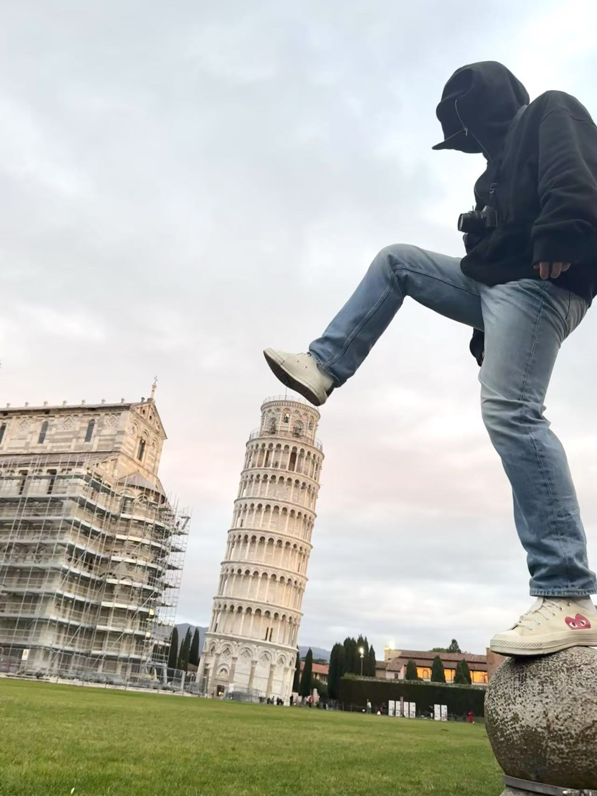

Florence
Day 1
In the morning, I took a train from Florence Santa Maria Novella Station to Pisa to visit the iconic Leaning Tower of Pisa. After exploring the area and taking some classic Pisa photos, I returned to Florence by train in the afternoon. Once back in the city, I visited the historic Ponte Vecchio (Old Bridge), admiring its unique architecture and the beautiful view over the Arno River.
Day 2
On the second day, I visited the magnificent Florence Cathedral (Cattedrale di Santa Maria del Fiore), admiring its stunning dome designed by Brunelleschi. After that, I climbed the Giotto’s Bell Tower, enjoying breathtaking panoramic views of Florence. In the afternoon, I explored the Galleria dell'Accademia, where I saw the world-famous statue of David by Michelangelo.